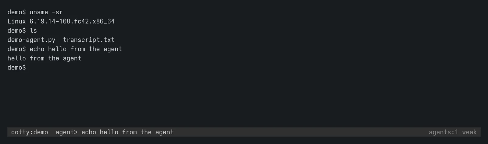
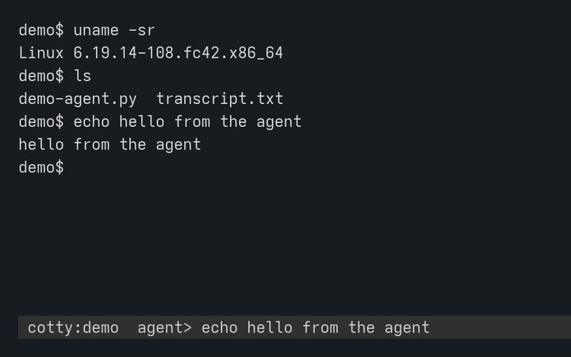
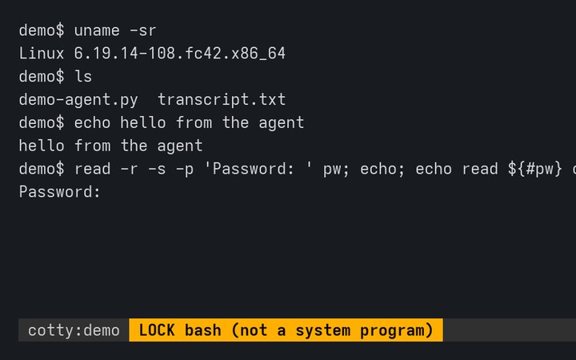
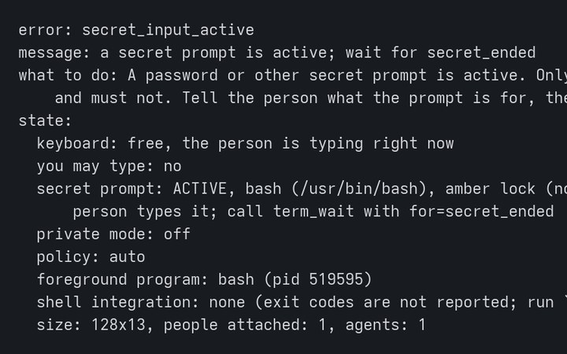
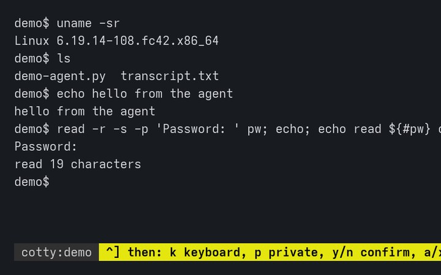
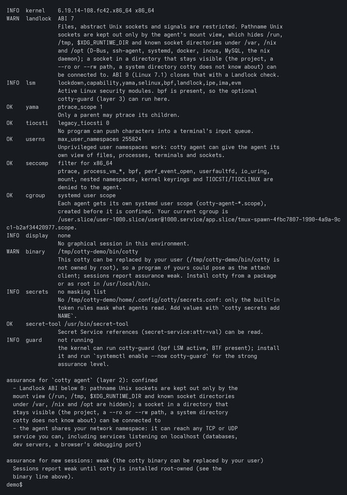

Project
cotty
A terminal shared by a person and an AI coding agent. You and the agent work in one real terminal session at the same time. You see everything it types, you can type at any moment, and you can take the keyboard back.

What it does
One terminal, two at the keyboard.
The agent reads the screen and types through MCP, so any agent CLI that speaks MCP works. Setup notes exist for Claude Code, Codex CLI, Gemini CLI, Cursor CLI and opencode.
-
You see and steer every step
The agent types into the same shell you are looking at. You can type at any moment, take the keyboard, and, with the confirm policy, approve or reject each command line the agent wants to run.
-
Password prompts stay with you
cotty detects secret prompts from the terminal's own settings, as with sudo, su, passwd, ssh and read -s. While one is active, a lock shows in your status line and the agent's input is refused. What you type at a password prompt never reaches the agent.
-
Secrets masked in what the agent reads
Values you put on a masking list are hidden in everything the agent reads.
cotty secrets add NAMEadds a value by reference, and the value is never printed. Private mode, which only you can turn on or off, freezes the agent's view, and rows written meanwhile stay hidden from it. -
The agent runs confined
cotty agentstarts the agent CLI in its own namespaces with Landlock, seccomp and its own cgroup, without root. Your keys, sockets, other terminals and other processes are out of its view, so it cannot go around cotty to read what cotty hides. -
An optional guard in the kernel
cotty-guardneeds root and the BPF LSM. It enforces the agent rules in the kernel and protects the session's terminal device from every other process. -
An honest assurance level
Each agent connection gets a level, and the status line shows the weakest one:
strongwith the guard andcotty agent,confinedwithcotty agentalone,weakwithout confinement evidence.cotty doctortells you what your system offers.
Screens
Captured from a real session of a locally built cotty in a throwaway directory, drawn
from the terminal's own contents. The agent here is a small script that speaks MCP to
cotty mcp, the same server agent CLIs start. Because that cotty binary was not
installed root-owned, the session reports the level weak. Select an image to see it larger.
-

The agent typed three commands in your shell. Its last line stays in the status line. -

A secret prompt is active. The lock names the program that asked; amber means it is not a trusted system program. -

At the same moment, the agent's command was refused and it was told to wait for the person. -

Ctrl-] then ? lists the hotkeys in the status line. Above it, the shell got the password; the agent did not. -

cotty doctor checks what the system offers, says what is missing, and names the gaps that remain.


Status
Testing, and early.
Where it stands
- Test build 0.1.0~git
20261104225151. 6ef77470a88d, from commit 6ef7747 of the public repository. - Packages
cottyand the optionalcotty-guard, signed with the OpenBasalt release key, in the opt-in testing channels on obpkg.org: basalt-testing for Fedora 44 and Basalt OS (x86_64), and the APT testing suite for Debian 13, Ubuntu 24.04 and 26.04 (amd64 and arm64). - Four internal review rounds found weaknesses that were fixed. What is still open is listed under Known limits in docs/security.md.
- Sessions, confinement and the guard are tested in throwaway lab virtual machines.
What cotty is not
- Not a sandbox for the commands the agent types into the shared session. Those run with your rights, in your shell: that is the purpose of the tool.
- Not a guard for secrets typed with echo on, unless you turned on private mode first or the value is on the masking list.
- Not a defence against a malicious kernel or root.
- Not a network filter. A confined agent can reach any TCP or UDP service you can, including services on localhost.
- Masking is not a boundary. It hides values the list knows from what the agent reads; it does not stop an agent from obtaining them another way.
The lock does not light for a password prompt inside a program that relays the terminal
in raw mode, such as sudo -i, ssh, tmux or
screen: turn private mode on before typing a secret there.
Install
Test packages for Basalt OS, Fedora, Debian and Ubuntu.
cotty needs Linux with user namespaces and Landlock; kernel 6.12 or later is recommended. Packages are signed with the OpenBasalt release key. Before you trust the key, check that its fingerprint is 3601 7348 42BD 4E48 2D19 DE4A E4EE D5EC A395 B302, and stop if it differs.
Basalt OS
The basalt-testing repository is configured and turned off. Install from it without turning it on:
sudo dnf --enablerepo=basalt-testing install cottyFedora 44
Download the package and the key, check both, then install the file:
curl -fsSLO 'https://obpkg.org/basalt-testing/44/x86_64/cotty-0.1.0~git20261104225151.6ef77470a88d-1.fc44.x86_64.rpm'
curl -fsSLo openbasalt-release-key.asc https://obpkg.org/keys/openbasalt-release-key.asc
gpg --show-keys --with-fingerprint openbasalt-release-key.asc
sudo rpm --import openbasalt-release-key.asc
rpm -K cotty-0.1.0~git20261104225151.6ef77470a88d-1.fc44.x86_64.rpm
sudo dnf install ./cotty-0.1.0~git20261104225151.6ef77470a88d-1.fc44.x86_64.rpm
rpm -K must report digests signatures OK. To follow new test
builds instead, add the basalt-testing repository as described in the
README and on obpkg.org.
Debian 13 and Ubuntu (APT)
Debian 13, Ubuntu 24.04 and 26.04, amd64 and arm64, from the testing suite:
curl -fsSLo /tmp/openbasalt-release-key.asc https://obpkg.org/keys/openbasalt-release-key.asc
gpg --show-keys --with-fingerprint /tmp/openbasalt-release-key.asc
sudo install -d -m 0755 /etc/apt/keyrings
sudo gpg --dearmor -o /etc/apt/keyrings/openbasalt-testing.gpg /tmp/openbasalt-release-key.asc
printf 'Types: deb\nURIs: https://obpkg.org/apt\nSuites: testing\nComponents: main\nSigned-By: /etc/apt/keyrings/openbasalt-testing.gpg\n' |
sudo tee /etc/apt/sources.list.d/openbasalt-testing.sources
sudo apt update
sudo apt install cottyOn Ubuntu 24.04 and later the package brings the AppArmor profile that lets cotty create user namespaces.
The guard (optional)
The guard needs root, the BPF LSM active (bpf listed in
/sys/kernel/security/lsm) and BTF. cotty doctor says whether your
kernel can run it. On Fedora 44:
curl -fsSLO 'https://obpkg.org/basalt-testing/44/x86_64/cotty-guard-0.1.0~git20261104225151.6ef77470a88d-1.fc44.x86_64.rpm'
rpm -K cotty-guard-0.1.0~git20261104225151.6ef77470a88d-1.fc44.x86_64.rpm
sudo dnf install ./cotty-guard-0.1.0~git20261104225151.6ef77470a88d-1.fc44.x86_64.rpm
sudo systemctl enable --now cotty-guard
cotty guard status
On Basalt OS, Debian and Ubuntu, install the cotty-guard package the same way
as cotty. Stopping the guard keeps every rule in force, and while it is
installed but stopped, cotty attach and cotty new refuse to run.
To remove it: sudo systemctl disable --now cotty-guard, then
sudo cotty-guard uninstall. docs/guard.md
explains how to enable the BPF LSM where it is off.
First session
cotty doctor # what this system offers, and what is missing
cotty new --ai --name work # a shared session, you are attached
cotty agent -- claude # in another terminal: the agent, confined
Inside the agent, the cotty MCP tools (term_read,
term_run, term_type, term_wait and others) act on the
shared session. Setup for each agent CLI is in
docs/agents.
Press Ctrl-] then one of these keys in the session:
ktake the keyboard (agents are refused) or give it backpprivate mode on or offyornaccept or reject the agent line waiting for confirmationaorxallow or deny a pending person attachsshare the session with agents, or hide itcshow the reattach codeddetach, which prints the reattach code?help
cotty attach work reattaches and asks for the reattach code. Do not type a
code into a session: the real code prompt is the attach client's, in a terminal of its own.
Source and documentation
One repository.
The source, the threat model and the design notes live together. Start with the README, then the threat model in docs/PLAN.md, section 2.
- openbasalt/cotty: the source, README and changelog
- docs/PLAN.md: goals, threat model and design
- docs/security.md: what each assurance level covers, where secrets live in memory, and the known limits
- docs/broker.md: sessions, status line, hotkeys, the lock, admission, audit
- docs/confinement.md:
cotty agent,cotty doctor, profiles - docs/guard.md:
cotty-guard, the BPF LSM layer - docs/mcp.md:
cotty mcpand the tools agents use
License
Apache License 2.0.
cotty is licensed under the Apache License, Version 2.0. The BPF programs are dual licensed Apache-2.0 OR GPL-2.0-only, because the kernel requires a GPL compatible license for BPF LSM programs.
Please report security problems privately, through GitHub's private vulnerability reporting on the repository. See its SECURITY.md.